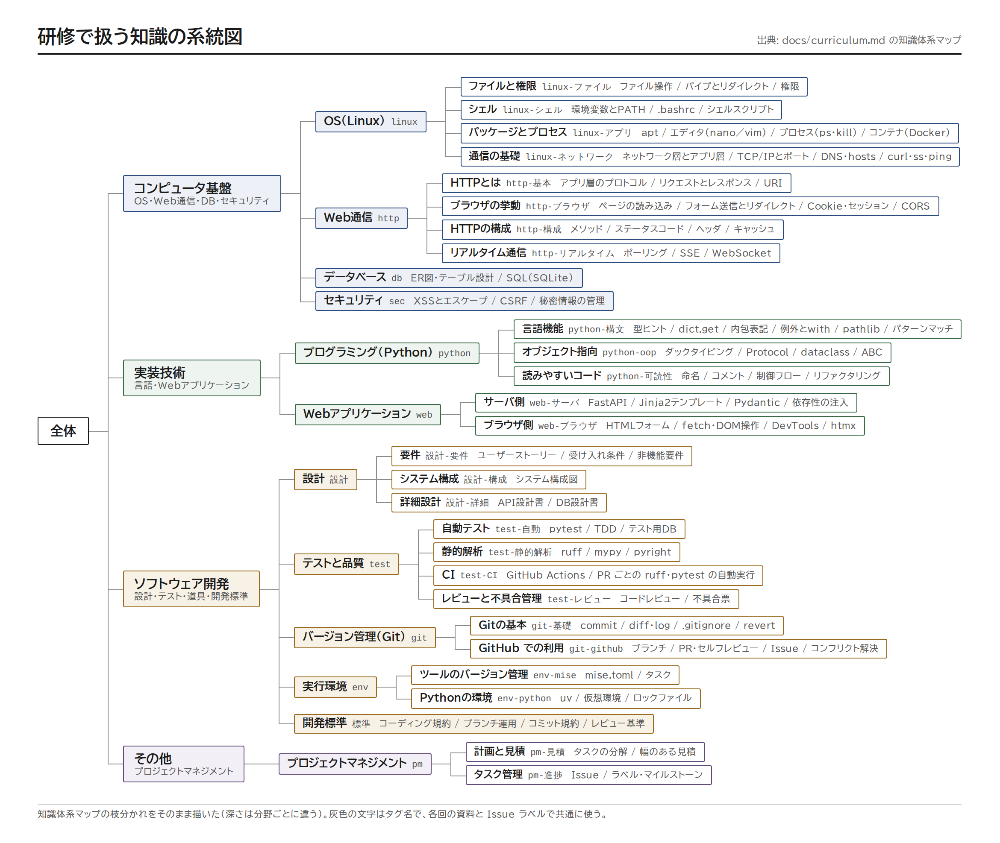
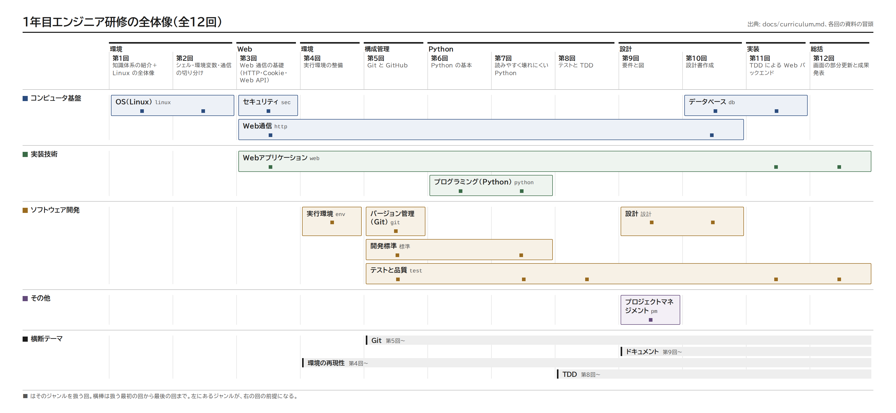

週1回×1時間×全12回の研修です。カリキュラムの正本は curriculum.md です。この全体概要の表と図は curriculum.md から生成するので、直すときは curriculum.md のほうを直します。
Linux の基礎から始めて、配属後に知らない領域に触れたときの判断基準となるベースを作っておくことが目的です。1つの題材「TODO・タスク管理アプリ」を通して、「作る」よりも「仕事を進める型」（記録する・小さく変更する・設計で合意する・テストで確かめる）を身につけます。評価の中心は Git 運用・設計書の質・テストのある実装で、Web 開発はそのための手段です。
全回を通して、次の4つを横断テーマとして扱います。
研修で扱う知識を、知識体系マップの枝分かれのとおりに描いた系統図です（深さは分野ごとに違います）。第1回の冒頭で全体を見回すのに使い、どの回で扱うかは下の全体像の図で説明します。

PDF 版は knowledge-map.pdf です。
列はフェーズと回、行は大分野です。ジャンル（分野）は、扱う最初の回から最後の回までの横棒で表します。■ が扱う回です。左にあるジャンルが、右の回の前提になります。系統図とこの図は、カリキュラムと各回の資料の冒頭から生成しているので、手で編集しません（tools/ で mise run diagrams）。

PDF 版は overview.pdf、同じ配置の Mermaid 版（Markdown に貼れる）は overview.mmd です。
日程は研修ごとに決めます。回のテーマ・タグ・成果物は curriculum.md の「全N回の一覧」から生成しています。
| 回 | テーマ | 所要 | tag | 前提タグ | 成果物 | 資料 | 見本 |
|---|---|---|---|---|---|---|---|
| 第1回 | 知識体系の紹介＋Linux の全体像 | 座学15分 / ハンズオン45分 | linux | なし | — | session01 | session01 |
| 第2回 | シェル・環境変数・通信の切り分け | 座学15分 / ハンズオン45分 | linux-シェル, linux-アプリ, linux-ネットワーク | linux | 環境設定手順書 | session02 | session02 |
| 第3回 | Web 通信の基礎（HTTP・Cookie・Web API） | 座学15分 / ハンズオン45分 | http, web-ブラウザ, sec | linux-シェル, linux-ネットワーク | — | session03 | session03 |
| 第4回 | 実行環境の整備 | 座学15分 / ハンズオン45分 | env-mise, env-python | linux-シェル, linux-アプリ, linux-ネットワーク | mise.toml＋環境構築手順書（README） | session04 | session04 |
| 第5回 | Git と GitHub | 座学15分 / ハンズオン45分 | git-基礎, git-github, 標準, test-レビュー | linux-ファイル, linux-アプリ, env-mise, env-python | 手順書のリポジトリ＋PR 2本（コンフリクト解決つき） | session05 | session05 |
| 第6回 | Python の基本 | 座学15分 / ハンズオン45分 | python-構文 | env-python, git-基礎, git-github | TODO の CLI＋アプリのリポジトリ（期限の追加を PR でマージ） | session06 | session06 |
| 第7回 | 読みやすく壊れにくい Python | 座学15分 / ハンズオン45分 | python-oop, python-可読性, test-静的解析, 標準 | python-構文, env-python, git-github | src/todo/ パッケージ＋ruff・mypy の設定と README（PR でマージ） |
session07 | session07 |
| 第8回 | テストと TDD | 座学15分 / ハンズオン45分 | test-自動, test-CI | python-oop, test-静的解析, git-github | テスト＋CI＋期限順の一覧（TDD の履歴が残る PR でマージ） | session08 | session08 |
| 第9回 | 要件と図 | 座学15分 / ハンズオン45分 | 設計-要件, pm-見積, pm-進捗 | python-構文, test-自動, git-github | 要件メモ（業務フロー図・状態遷移図）＋ストーリー S-01〜S-04（Issue とその控え、PR でマージ） | session09 | session09 |
| 第10回 | 設計書作成 | 座学15分 / ハンズオン45分 | 設計-詳細, 設計-構成, http-構成, db | 設計-要件, git-github | API・DB設計書＋システム構成図（隣の人の質問を反映し、PR でマージ） | session10 | session10 |
| 第11回 | TDD による Web バックエンド | 座学15分 / ハンズオン45分 | web-サーバ, db, test-自動 | 設計-詳細, python-oop, test-自動, test-CI | Web 版（FastAPI＋Jinja2＋SQLite）＋受け入れ条件 (1)〜(15) のテスト（TDD の履歴が残る PR でマージし、ストーリーの Issue を閉じる） | session11 | session11 |
| 第12回 | 画面の部分更新と成果発表 | 座学5分 / ハンズオン25分 / 発表準備5分 / 発表25分 | web-ブラウザ, test-レビュー | http, web-サーバ, test-自動 | fetch による部分更新（HTML 断片＋比較用の JSON 版）＋不具合票 BUG-001 とその修正＋発表資料（PR 3本でマージ） | session12 | session12 |
各回の資料の冒頭は、次の形にそろえています。
# 第2回 シェル・環境変数・通信の基礎
tag: linux-シェル, linux-アプリ, linux-ネットワーク
前提タグ: linux-ファイル
所要: 座学20分 / ハンズオン40分tag: その回で扱う知識。タグ一覧 から、タグごとの索引（扱う回・読む本）に飛べます前提タグ: その回の前に身につけておきたい知識所要: 座学・ハンズオンの配分（回ごとに違う）instructor.md は講師用です（受講者に配るときは除きます）| ディレクトリ | 内容 |
|---|---|
docs/sessionNN/ |
各回の資料（README.md 受講者用、instructor.md 講師用、assets/ 演習素材） |
docs/templates/ |
設計書・ユーザーストーリー（Issue）・不具合票・PR のひな形 |
docs/tags.md、docs/tags/ |
タグ一覧とタグ索引（tools/ で生成） |
docs/open-questions.md |
未確定事項（社内プロキシ、Git ホスティングなど） |
docs/_template/ |
資料を書くときのひな形（講師・作成者向け） |
docs/diagrams/ |
知識の系統図（knowledge-map.png・.pdf・.html）と研修の全体像の図（overview.png・.pdf・.html、Mermaid 版 overview.mmd・overview-mermaid.png。tools/ で生成） |
docs/_build/ |
HTML 版（html/）と1冊の PDF 版（handsoff.pdf）。tools/ で生成 |
examples/sessionNN/ |
各回の成果物の見本と、その回の見本への案内 |
examples/todo-app/ |
見本の TODO アプリの最新（第12回終了時点） |
examples/todo-app-snapshots/ |
見本の TODO アプリの各回終了時点の状態（session-06/ 〜 session-12/）。一覧と追いつき方は examples/README.md |
回の構成やタグを変えるときは、curriculum.md を直してから tools/ で mise run tag-index（一覧と索引の再生成）と mise run check（資料との食い違いの検査）を実行してください。